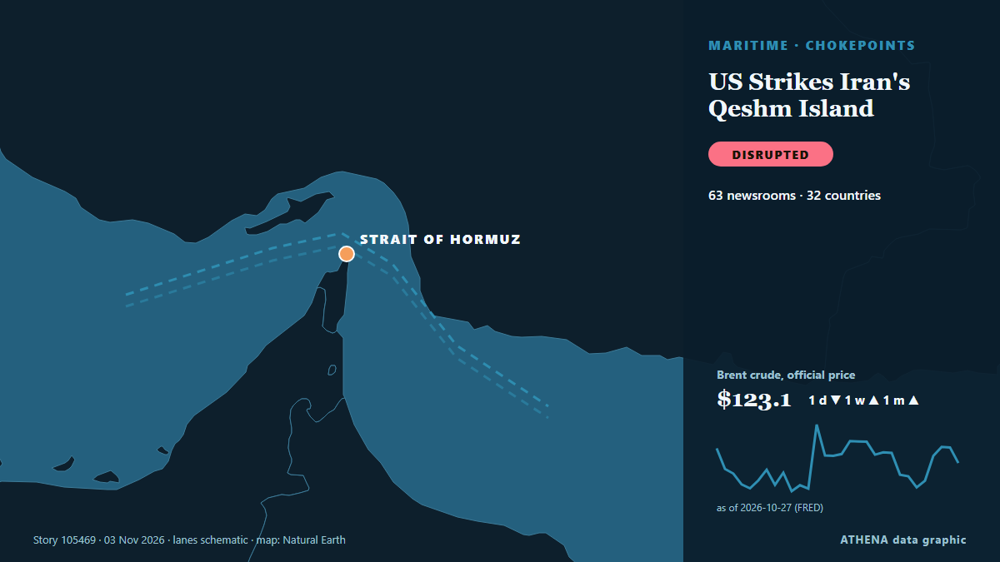

ATHENA Glaux Intelligences — Παγκόσμια ειδησεογραφική ανάλυση — κάθε αριθμός εξηγημένος
Οι ειδήσεις του κόσμου, διασταυρωμένες ανάμεσα σε χώρες
Το ATHENA Glaux παρακολουθεί εκατοντάδες ειδησεογραφικά μέσα σε όλο τον κόσμο και ομαδοποιεί τις αναφορές τους σε γεγονότα. Για κάθε γεγονός βλέπετε πόσα μέσα σε πόσες χώρες το ανέφεραν, ποιος ήταν πρώτος και έναν βαθμό κινδύνου με τους λόγους του — με ενημέρωση κάθε 15 λεπτά, σε επτά γλώσσες.
Ζωντανά από τις ειδήσειςTenerife striker Jesús de Miguel dies aged 30 after on-field collision45 μέσα · 27 χώρες · Κίνδυνος 5.3 · Πηγές: CNA (Channel NewsAsia), Sydney Morning Herald

ΓεωπολιτικήUS Strikes Iran's Qeshm Island
The Wall Street Journal reported the attack, describing it as the latest of a series of limited strikes Washington has secretly carried out against Iran in recent weeks. από Free Malaysia Today
Οι τίτλοι των ειδήσεων παρουσιάζονται στα αγγλικά, όπως δημοσιεύτηκαν.
ECB keeps rates on hold as Christine Lagarde announced her resignation
The deposit rate will be left at 2.5% on Thursday, analysts say. από Luxembourg Times
The top 10 things to watch for in the US midterm elections
And what it could all mean for New Zealand. από RNZ National

Η σημερινή εικόνα
| 14:00 | 851 |
|---|---|
| 15:00 | 775 |
| 16:00 | 956 |
| 17:00 | 689 |
| 18:00 | 579 |
| 19:00 | 583 |
| 20:00 | 419 |
| 21:00 | 410 |
| 22:00 | 469 |
| 23:00 | 352 |
| 00:00 | 433 |
| 01:00 | 347 |
| 02:00 | 347 |
| 03:00 | 414 |
| 04:00 | 442 |
| 05:00 | 449 |
| 06:00 | 784 |
| 07:00 | 455 |
| 08:00 | 1816 |
| 09:00 | 559 |
| 10:00 | 952 |
| 11:00 | 863 |
| 12:00 | 702 |
| 13:00 | 891 |
Κίνδυνος των σημερινών γεγονότων
US delivery of 500 Patriot missiles to Ukraine will span 3 years starting in 2030
NATO Supreme Allied Commander Europe General Alexus Grynkewich said the United States continues to supply Ukraine with Patriot interceptor missiles, as well as weapons packages paid for by European… από Ukrinform (English)
Tenerife striker Jesús de Miguel dies aged 30 after on-field collision
By Domprey Amewornu Davidson Spanish football club CD Tenerife has confirmed the death of striker Jesús de Miguel, who passed away on Tuesday morning after suffering a serious injury during the… από GBC Ghana Online
Death toll hits 29 after Russian strike on Ukrainian aid site, with 48 still missing
Russia launched 289 attack drones, 17 ballistic missiles and 59 cruise missiles across nine regions, President Zelenskyy said in an online post that noted the barrage coincided with U.S. elections. από NPR
Με την ευρύτερη κάλυψη
Αναδυόμενα σήματα
- Απότομη αύξηση · Ενεργό τώραVirgin Media
- Απότομη αύξηση · Ενεργό τώραQeshm Island
- Νέο όνομα στις ειδήσεις · Ενεργό τώραKomyshuvakha
- Απότομη αύξηση · Ενεργό τώραAgoa
- Απότομη αύξηση · Ενεργό τώραQeshm
Επίσημες προειδοποιήσεις
- Red notification for tropical cyclone FOUR-26. Population affected by Category 1 (120 km/h) wind speeds or higher is 1.156 million .Red · GDACS ·
- Cyber chief: UK facing AI-powered attacks on critical infrastructure within two yearsadvisory · UK National Cyber Security Centre ·
- M 6.0 - 165 km NW of Port-Olry, VanuatuM6.0 · USGS ·
- M 6.2 - 43 km ESE of Port-Olry, VanuatuM6.2 · USGS ·
- M 6.0 - 214 km NW of Port-Olry, VanuatuM6.0 · USGS ·
Το ATHENA στο Telegram
Μπείτε δωρεάν στην ομάδα ATHENA Glaux και λάβετε τις ειδήσεις τη στιγμή που δημοσιεύονται εδώ:
- έκτακτα γεγονότα με κίνδυνο 6 ή περισσότερο
- ωριαία σύνοψη των κορυφαίων γεγονότων
- ενημερώσεις των παρακολουθήσεων κινδύνου (Ορμούζ, Ερυθρά Θάλασσα, Ταϊβάν, κυρώσεις κ.ά.)
- την ημερήσια ενημέρωση κάθε πρωί στις 10:00 (ώρα Ελλάδας)
- εβδομαδιαία προοπτική
- επίσημες προειδοποιήσεις, αναδυόμενα σήματα και κινδύνους σε άνοδο
Πατήστε το κουμπί, ανοίγει το Telegram, πατήστε «Join». Οι αναρτήσεις είναι στα αγγλικά· μπορείτε να τη σιγάσετε ή να αποχωρήσετε όποτε θέλετε. Δεν έχετε Telegram; Είναι δωρεάν στο telegram.org.
Παρακολούθηση κινδύνων
Περισσότερα ›Παγκόσμιοι κίνδυνοι — εβδομάδα 45, 2026 (2–8 Νοε) ›
Γεωπολιτική, Πολιτική & Ασφάλεια
Περισσότερα ›Indian Navy Rescues 20 Crew Members From Hijacked Iranian Vessel off Somalia
Airborne commandos recapture fishing boat seized by pirates as attacks off the Somali coast rise to their highest level since 2013. από Kurdistan24 (English)
- Εκλογές & πολιτική
LGE 2026 | Rigging claims and anti-migrant posts raise fears of polling station clashes
- Εκλογές & πολιτική
Iran-US deal still out of reach despite heightened diplomatic efforts
- Πόλεμοι & συγκρούσεις
War widens in the Black Sea in a test of NATO red lines
- Πόλεμοι & συγκρούσεις
Iran Speaker: Ball in US court to prevent war
Οικονομία, Χρηματοοικονομικά & Αγορές
Περισσότερα ›Virgin Media O2 cutting thousands of jobs in cost savings overhaul
The bulk of the savings – about £300 million – will come from job cuts among its 16,000-strong UK workforce. από Evening Standard (London)
- Κρυπτονομίσματα & ψηφιακά στοιχεία
Greenback pulls back ahead of US midterms; Bitcoin stabilises after crypto heist
- Μετοχές, ομόλογα & αγορές
The midterms and the world
- Τράπεζες & πίστη
FG begins N50,000 monthly cash support for poor Nigerians
- Μετοχές, ομόλογα & αγορές
Jack Lowden speaks out over James Bond rumours as speculation soars over future 007
Εμπόριο, Βιομηχανία & Υποδομές
Περισσότερα ›Heathrow flight with 181 passengers diverted after reported bomb threat
A LOT Polish Airlines flight from London Heathrow to Warsaw was diverted to Warsaw Modlin Airport after a reported bomb threat was made against the aircraft carrying 181 passengers. από Irish Mirror
- Ναυτιλία & λιμάνια
KONGSBERG expands underwater surveillance technology for port security
- Ναυτιλία & λιμάνια
11 tankers caught fire in Hormuz in 9 days: IRGC Navy
- Αερομεταφορές, σιδηρόδρομος & οδικές
Ryanair to review pay freezes and AI use to counter jet fuel price surge
- Αερομεταφορές, σιδηρόδρομος & οδικές
Türkiye, Kazakhstan target $15B in bilateral trade
Ενέργεια, Πόροι & Περιβάλλον
Περισσότερα ›Syria says foiled Hezbollah attack on Homs refinery
Syrian authorities have thwarted a “terrorist plot” targeting the Homs Refinery orchestrated by a cell affiliated with Hezbollah, the Syrian interior ministry said on Tuesday. από Naharnet
- Πυρηνική ενέργεια
Turkiye, South Korea Agree to Cooperate on Nuclear Plant Financing
- Πετρέλαιο & φυσικό αέριο
Petronet LNG reports 52.3% growth in net profits, in talks for availing undelivered cargoes
- Πετρέλαιο & φυσικό αέριο
Shell to sell NWS LNG stake to XRG
- Πετρέλαιο & φυσικό αέριο
Aramco exploring expansion of East-West Pipeline that avoids Hormuz
Τεχνολογία, ΤΝ & Κυβερνοασφάλεια
Περισσότερα ›Fridge cyberattack on supermarkets across Europe prompts EU warning
A suspected cyberattack hit grocery stores across at least nine European countries on Monday, prompting the EU to warn of a deliberate attempt to disrupt the bloc's food supply chain. από The Local Denmark
- Τεχνητή νοημοσύνη
Google's use of press by AI chatbot may infringe copyright rules, EU court adviser says
- Κυβερνοασφάλεια
Finnish shops possibly affected by European supermarket freezer hack
- Κυβερνοασφάλεια
Hackers hit Ukraine, Russia's emergency apps, send fake nuclear, chemical attack alerts
- Λογισμικό & cloud
Nvidia orders data centre clients to reduce China exposure
Επιχειρήσεις, Εταιρείες & Επενδύσεις
Περισσότερα ›Crime fears threaten Cape Town's tourism appeal and township investment
The concerns come after a week of shootings linked to a dispute between the Cape Amalgamated Taxi Association (CATA) and the Congress of Democratic Taxi Associations (CODETA) reached Cape Town… από IOL
- Πτωχεύσεις & αναδιαρθρώσεις
German auto supplier Schaeffler to cut 3,460 jobs in Europe amid automotive crisis
- Εταιρική στρατηγική
Retailer Zalando launches AI shopping agent as margins squeezed
- Κλάδοι & εταιρικοί κίνδυνοι
Iulian Stanciu is selling Flanco electroretail-chain to Kotsovolos, part of the PPC Group
- Νεοφυείς & καινοτομία
Hypersonic missile being made by British-German startup ‘could strike deep inside Russia’
Υγεία, Επιστήμη & Έρευνα
Περισσότερα ›New York state reports first measles-linked child death in over 30 years amid outbreak
The state's governor declared a state disaster emergency in October in response to the measles outbreak. από The Straits Times
- Επιδημίες & δημόσια υγεία
Ebola survivors comfort sick children in Congo’s isolation wards
- Ιατρική έρευνα
Amansie youth benefit from Asanko Gold apprenticeship programme
- Φάρμακα & βιοτεχνολογία
US approves cheap version of HIV prevention shot
- Έρευνα & χρηματοδότηση
Tanzania moves to provide 10,000 graduates with workplace internship opportunities annually
Κοινωνία, Δίκαιο & Δημόσια Πολιτική
Περισσότερα ›Dia Mirza Diwali appeal row: Deeply pained, says HC; asks BMC to re-upload video
The Bombay high court found the Brihanmumbai Municipal Corporation's removal of Dia Mirza's video unfortunate and requested its restoration. από Times of India
- Εκπαίδευση & δεξιότητες
French school blockades to restart from Monday: Student group
- Δικαιοσύνη
Trump asks Supreme Court to sideline 20,000 California mail ballots
- Εκπαίδευση & δεξιότητες
At Least 31 Killed in Russian Bomb Attack in Zaporizhzhia
- Δικαιοσύνη
Poland: Dispute Over Constitutional Court Escalates
Αθλητισμός
Περισσότερα ›AFC Postpones 2027 Asian Cup in Saudi Arabia Amid Regional Security Concerns
RIYADH, Nov 3: The Asian Football Confederation (AFC) has postponed the 2027 AFC Asian Cup in Saudi Arabia by nearly a year, citing exceptional regional circumstances, logistical d... από Arab Times
- Ποδόσφαιρο
West Ham sack Nuno Espírito Santo as head coach
- Ποδόσφαιρο
Everton beat Newcastle 1-0 to pile pressure on Jaissle
- Ποδόσφαιρο
Pressure builds as Malaysia take on Japan in ACT semi-finals
- Ολυμπιακά & άλλα σπορ
Nearly 8.4 million ticket requests received for India and Pakistan's 2027 World Cup clash
Πολιτισμός, Πρόσωπα & Τρόπος ζωής
Περισσότερα ›King Charles' sorrow over slavery faces test as reparations movement gains ground
European traders enslaved 12.5 million Africans, including 3.2 million transported by Britain. από Express Tribune
- Τέχνες, βιβλία & κληρονομιά
Baghdad’s first Jewish museum opens its doors
- Μουσική
Deep Purple postpone shows after Ian Gillan hospitalised following “medical emergency”
- Κινηματογράφος & τηλεόραση
‘The Remarried Empress’ Gets Surprise Early Premiere On Disney+/Hulu
- Κινηματογράφος & τηλεόραση
Kristin Scott Thomas stars in festive John Lewis jaunt with toy dog Pickles